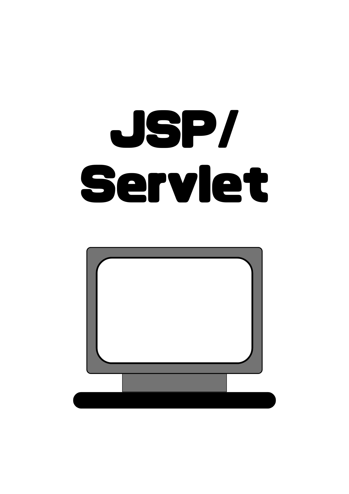

Scroll

Servletとは何か、基本的な役割を理解します。
初期化から破棄までの流れを学びます。
Servletでのリクエスト処理とレスポンスの作成方法を理解します。
JSPの基本概念とHTMLとの違いを学びます。
ServletとJSPを連携させる方法を理解します。
JSPでのELを使用してデータを表示する方法を学びます。
JSTLを使用してコードを簡潔にする方法を理解します。
JDBCを使用してデータベースに接続し、データを操作します。
Servletでのセッション管理の方法を学びます。
ServletおよびJSPでのエラーハンドリング方法を理解します。
リクエストとレスポンスを加工するフィルターの使い方を学びます。
ServletContextやHttpSessionのリスナーを理解します。
Webアプリケーションをサーバーにデプロイする手順を学びます。
Servlet/JSPアプリケーションの基本的なセキュリティ対策を理解します。
RESTful APIをServletで実装する方法を学びます。